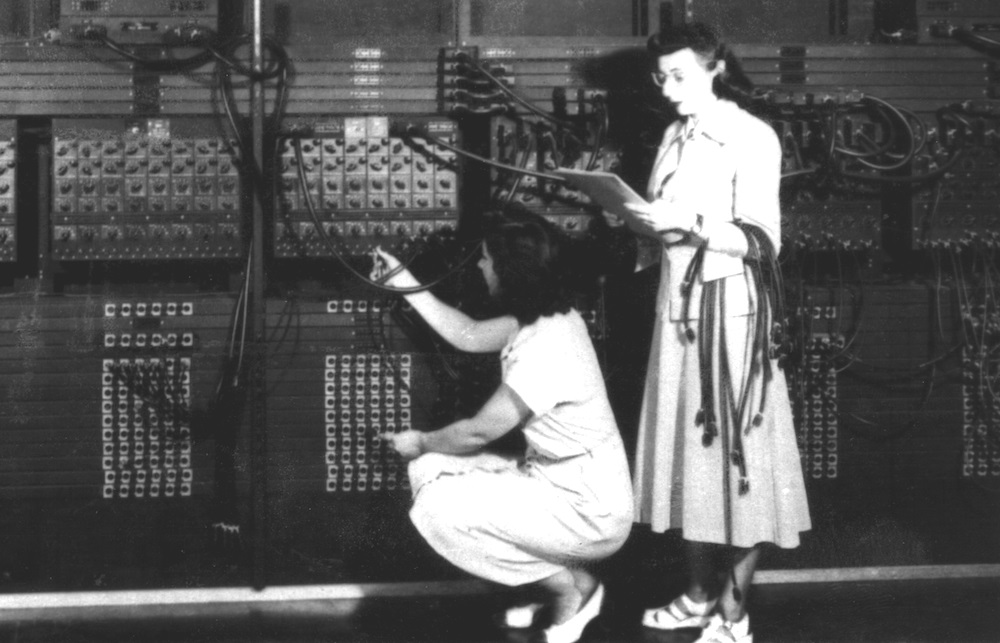
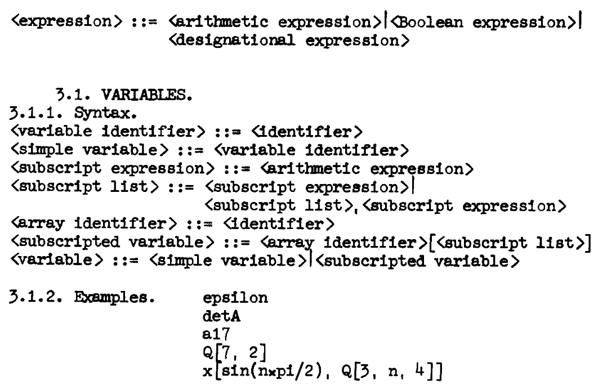
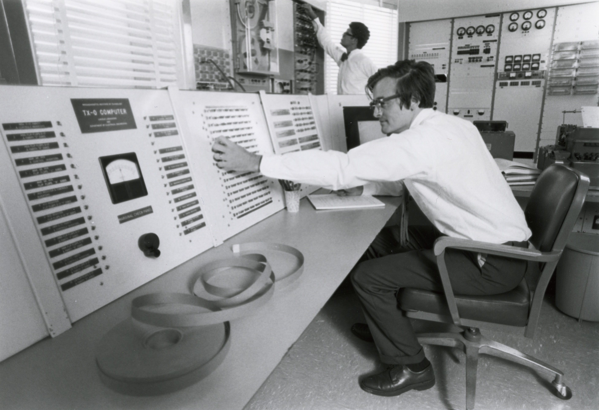
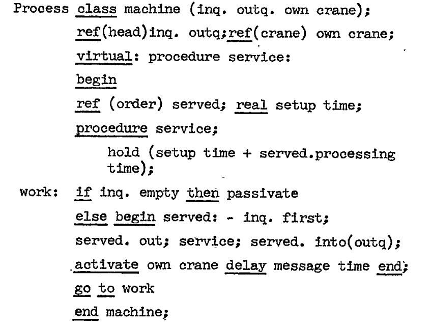
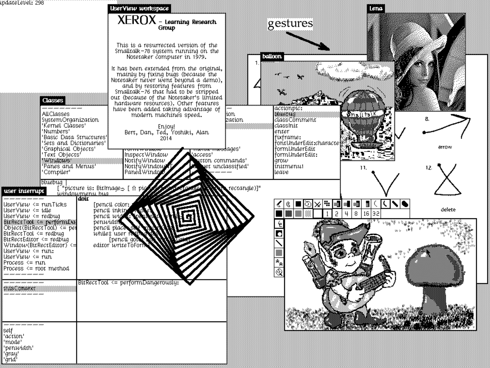
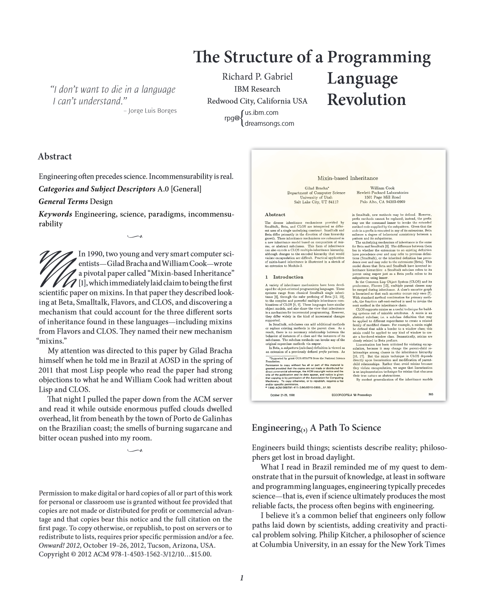
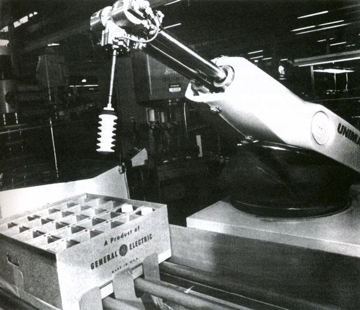
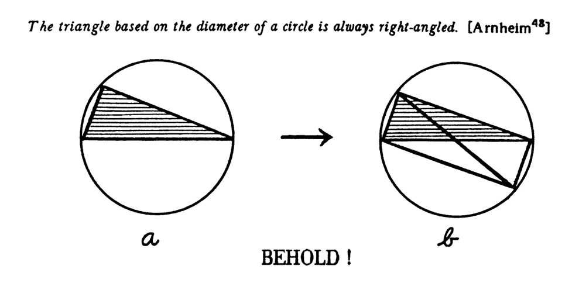
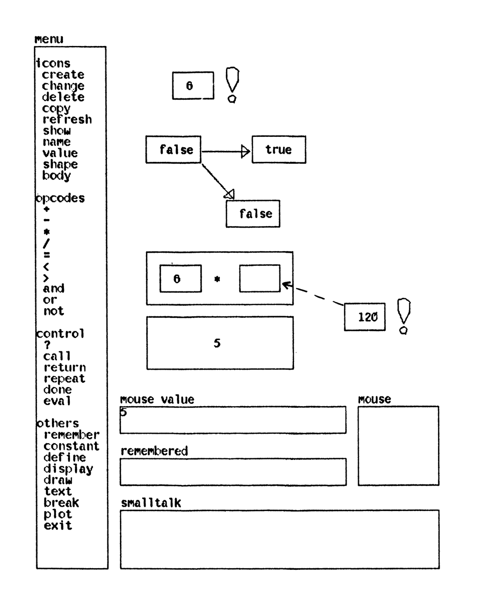

Interactive programming
As a shift from language to gesture
Tomáš Petříček, Faculty of Mathematics and Physics
petricek@d3s.mff.cuni.cz |
https://tomasp.net
Language and gesture
In the context of programming
- Programming language as a non-obvious metaphor
- Gesture as interaction with the system
- Evolving relationship from 1940s to today
- Any parallels to philosophical thinking?
How programming became language
Gesture
ENIAC ('45) programmed
by plugging cables

Language
Algol ('60) programs as entities in a formal language

Origins of the linguistic metaphor

Cybernetic discourse
Programming as translation from human language into "the language the machine can understand"
Automatic coding
Using computer itself to "take over routine, mechanizable aspects of the programming process"
Cultures of programming
The birth of programming language
-
Hacker culture
Tricks behind clever automatic coding systems -
Mathematical culture
Formal devices inspired by Chomsky's grammars -
Managerial culture
Practical need for machine-independence

From physical to virtual gesture
TX-0 computer
at MIT from 1958
Interactive programming
Inspect program state
modify while running
Object-oriented programming
Language
Simula ('67) language "talks" about object behaviour

Gesture
Smalltalk ('76) interactive medium for information

Demo
Interacting with Smalltalk 78

1990s paradigm shift in programming research
From programming systems to programming languages
From gestures to languages?
Language perspective incommensurable with the gesture perspective
Language and gesture
In the context of programming
- It needs to exist to be manipulated by gestures!
- Physical and virtual work equally well
- Gesture and language are intertwined
- Are programming gestures limited to the concrete?

Unimate (1960s)
Programming by demonstration
Guided through steps in "training mode"
Repeats the steps in "production mode"
Pygmalion programming system
Inspired by iconic reasoning
Branch of geometry in ancient India which used only diagrams
Gesture without language
Iconic representation of parameters,
emphasis on doing rather than telling

Enacting the factorial function
Abstracting gesture?
Abstract computation described using icon manipulation
Image rather than language!
Demo
Pygmalion reconstruction
Conclusions
Language, gesture, picture in programming
- Complex interactions between the three!
- Shifts between linguistic and gestural
- Gestures manipulate language or pictures
Tomáš Petříček, Faculty of Mathematics and Physics
petricek@d3s.mff.cuni.cz |
https://tomasp.net
References
- Nofre et al. (2014) When technology became language: the origins of the linguistic conception of computer programming, 1950-1960
- Smith (1977) Pygmalion: A Computer program to Model and Stimulate Creative Thought
- Habušta (2024) Reconstructing the Pygmalion programming environment
- Petricek (to appear) Cultures of Programming
- Gabriel (2012) The structure of a programming language revolution